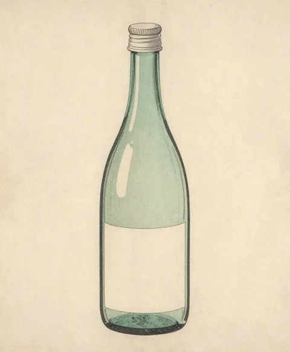
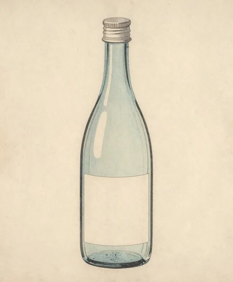
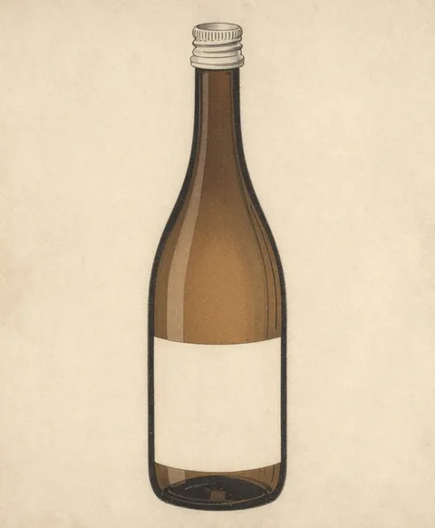
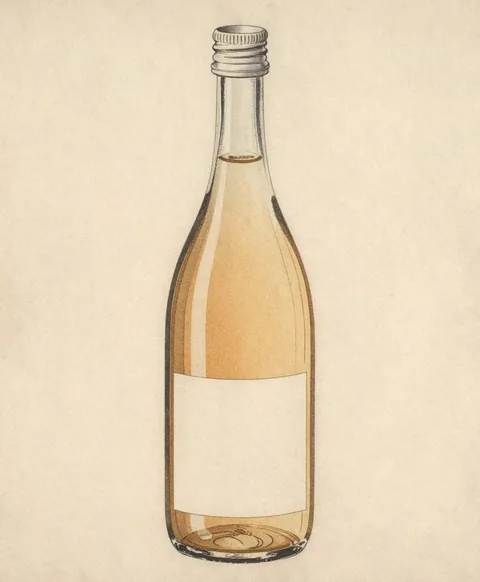

瀬音酒造 酒
川の流れで、
四つの酒を並べる。
四つの
瀬音の
味のものさし
左へ

純米吟醸浅瀬（あさせ）
川の
- 精米歩合
- 60%
- 日本酒度
- −2
（やや 甘口） - 味
- さらりと
軽い。 果実のような 香りが、 あとから 少し。 - 合う
料理 - 白身の
刺身、 冷たい 豆腐、 果物 - 容量・価格
- 720ml 1,760円
（税込）

純米早瀬（はやせ）
流れの
- 精米歩合
- 70%
- 日本酒度
- +5
（辛口） - 味
- すっきり、
後味が 早く 消える。 - 合う
料理 - 焼き魚、
天ぷら、 塩で 食べる 料理 - 容量・価格
- 720ml 1,540円
（税込）

純米大吟醸淵（ふち）
水が
- 精米歩合
- 45%
- 日本酒度
- +1
（中口） - 味
- ふくよか。
口の 中で、 ゆっくり広がる。 - 合う
料理 - 鴨、
ぶり 大根、 熟成チーズ - 容量・価格
- 720ml 3,850円
（税込）

純米凪（なぎ）
風の
- 精米歩合
- 65%
- 日本酒度
- +2
（やや 辛口） - 味
- やわらかな
旨み。 温めると、 ふくらむ。 - 合う
料理 - 鍋、
煮物、 焼き鳥 - 容量・価格
- 720ml 1,650円
（税込）
買うには
蔵の
蔵の